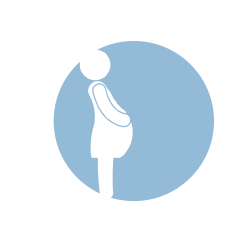
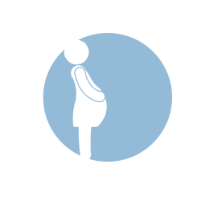

A woman must receive state-directed counseling that includes information designed to discourage her from having an abortion and then wait 72 hours before the procedure is provided. The 72 hour waiting period does not include weekends or annual holidays.
Health plans that will be offered in the state’s health exchange under the Affordable Care Act can only cover abortion when the woman’s life is endangered or her health is severely compromised.
The use of telemedicine for the performance of medication abortion is prohibited. The parent of a minor must be notified before an abortion is provided. Public funding is available for abortion only in cases of life endangerment.
35% Hospitals
19% Clinics
17% Private physicians’
98% of South Dakota counties have no abortion clinic
77% of South Dakota women lived in these counties